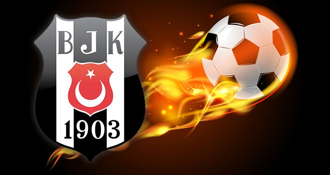
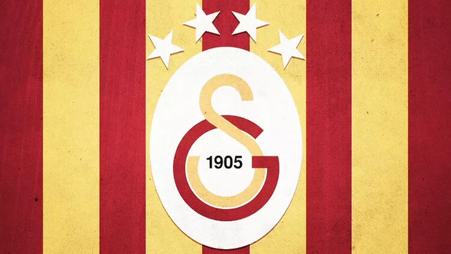
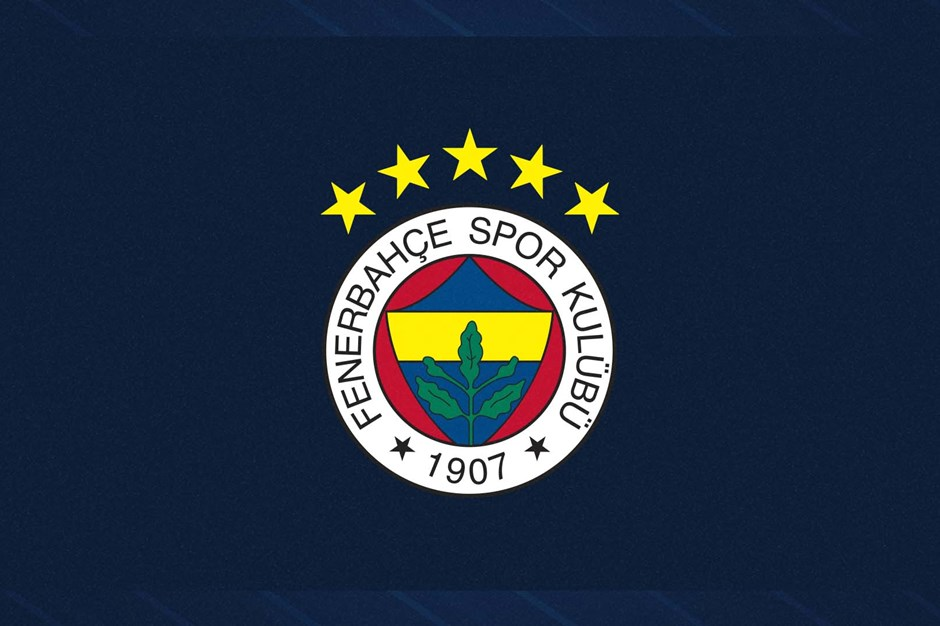

Üç Büyükler, Türkiye'nin en köklü üç spor kulübü olan Beşiktaş, Fenerbahçe ve Galatasaray'ı nitelemekte kullanılan terim. Takımların üçü de İstanbul'da kurulmuştur. Üç büyük takım birbiriyle ezeli rekabet içerisindedir ve futbolda genellikle lig şampiyonluğunun favorileridir. Süper Lig'deki 61 sezondan 54'ünün şampiyonu bu üç takımdan birisidir. 1959'dan bu yana üçlünün hiçbiri alt kümeye düşmemiştir. Fenerbahçe'nin ligde yer aldığı en düşük sıralama 10.'luk iken, Galatasaray ve Beşiktaş'ın 11. sıradır. Bu üç takımdan başka sadece üç takım şampiyonluk yaşamıştır. Trabzonspor, yedi şampiyonluk ile Üç Büyükler'den sonra en başarılı kulüp olarak yer alır. Birer şampiyonluğu bulunan takımlardan Bursaspor, bu sevinci 2009-10; İstanbul Başakşehir ise 2019-20 sezonunda yaşamıştır.
Beşiktaş, Beşiktaş Jimnastik Kulübü'nün Süper Lig'de mücadele eden futbol takımı. 1903 yılında Bereket Jimnastik Kulübü (Asıl Çerkesçe ismi Bereketiqo olup bazı kurucuların mensup olduğu Çerkes sülalesinden gelmektedir, Türkçeye Bereket olarak çevrilmiştir.) adıyla kurulan Beşiktaş JK'nin, Ağustos 1911'de kurulan şubesidir. Maçlarını 2012-13 sezonuna kadar 32.086 kapasiteli İnönü Stadyumu'nda oynamıştır. 2012-13 sezonu sonunda kulüp, yeni stad yapım çalışmaları başlatmıştır. Armasında ay-yıldız taşıma izni verilen 28 Türk kulübünden biridir. Yurt içi ve yurt dışında gösterdiği performansı, kazandığı kupalar ve ilkleriyle Türkiye'nin en büyük futbol kulüplerinden birisidir.
Beşiktaş hakkında detaylı bilgi için tıklayınız...
Galatasaray, Galatasaray Spor Kulübü'nün Süper Lig'de mücadele eden futbol takımıdır. Galatasaray Spor Kulübü'ne ait olan Galatasaray Sportif Anonim Şirketi, kulübün futbol takımının sahibidir. Galatasaray Spor Kulübü'nün 1997 yılında şirketleşme sürecine girmesinin ardından kurulmuştur. Hisselerinin %55,03'ü Galatasaray Spor Kulübü Derneğine aittir, %44,96'sı ise Borsa İstanbul'da halka açıktır. Türkiye futbol tarihinin en başarılı ve en çok taraftarı olan spor kulüplerinden birisidir. 1905 yılında Ali Sami Yen ve arkadaşları tarafından, öğrenci oldukları Galatasaray Lisesi'nde kurulan kulübün ilk spor dalıdır. Şu ana kadar 22 kez Süper Lig şampiyonu olmuş, 18 kez Türkiye Kupası ve 16 kez de Türkiye Süper Kupası kazanmış; 2000 yılında da UEFA Kupası'nı ve UEFA Süper Kupa'yı kazanmıştır. Galatasaray, ayrıca Uluslararası Futbol Tarihi ve İstatistikleri Federasyonu tarafından yapılan "Dünyanın en iyi futbol kulüpleri" istatistik çalışmasında, 2000 Ağustos ayı en iyi takımı 2001 Ocak ayında ise puan sıralamasında 1. sıraya yükselerek ayın lideri olmuştur.
Galatasaray hakkında detaylı bilgi için tıklayınız...
Fenerbahçe, Fenerbahçe Spor Kulübü'nün Süper Lig'de mücadele eden profesyonel futbol takımıdır. Kulübün futbol dışında faaliyet gösterdiği diğer spor dalları basketbol, voleybol, atletizm, boks, kürek, yelken, yüzme ve masa tenisi'dir. Takım, iç saha maçlarını İstanbul Kadıköy'de bulunan 50.530 kişilik Fenerbahçe Şükrü Saracoğlu Stadyumu'nda yapmaktadır. 1907 yılında bir spor kulübü olarak kurulan Fenerbahçe, Türkiye futbol tarihinin en başarılı ve en çok taraftarı olan spor kulüplerinden birisidir. Fenerbahçe'nin toplamda 28 Türkiye şampiyonluğu bulunmaktadır. Süper Lig'de 19 kez, Millî Küme'de 6, Türkiye Futbol Şampiyonası'nda ise 3 kez birinci olarak Türk futbol tarihinde en çok millî şampiyonluk yaşamış takımdır. Ayrıca, 6 Türkiye Kupası ve 9 Türkiye Süper Kupası şampiyonluğu da bulunmaktadır. 2012-13 sezonunda UEFA Avrupa Ligi'nde yarı finale çıkarak tarihinde bir Avrupa kupasındaki en iyi derecesini elde etti. 1968 yılında şampiyonluk yaşadığı Balkan Kupası Türkiye'nin ve kulüp tarihinin ilk Avrupa kupası oldu.
Fenerbahçe hakkında detaylı bilgi için tıklayınız...